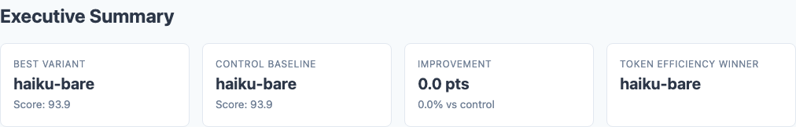
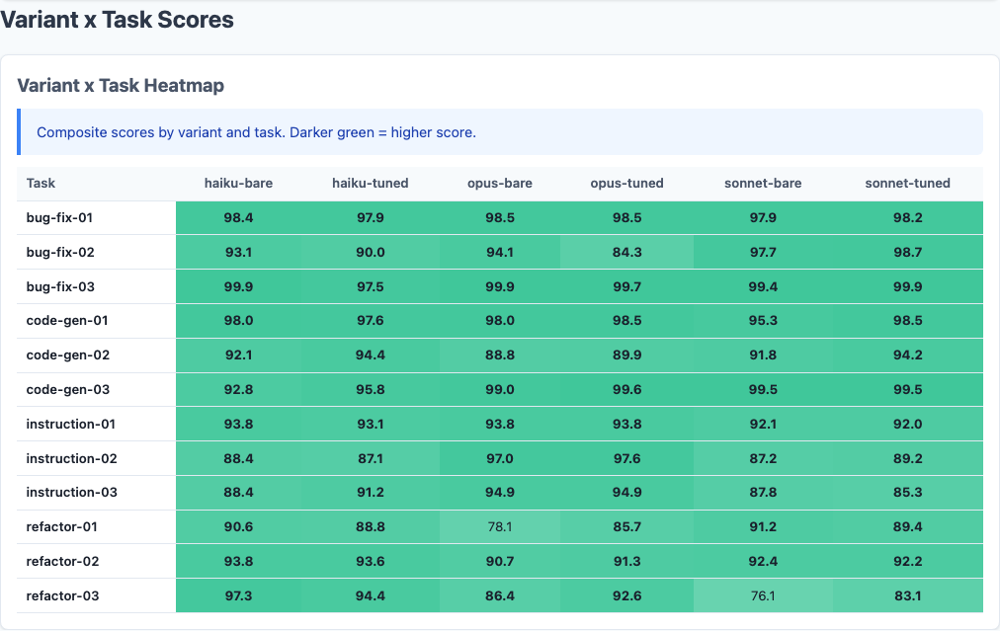
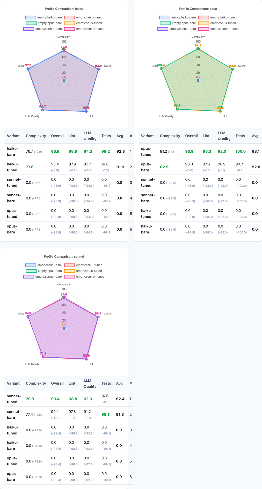
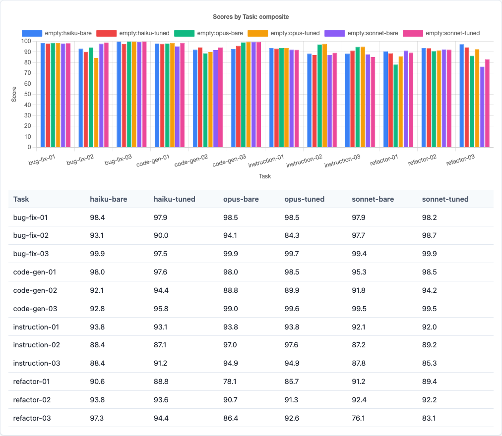
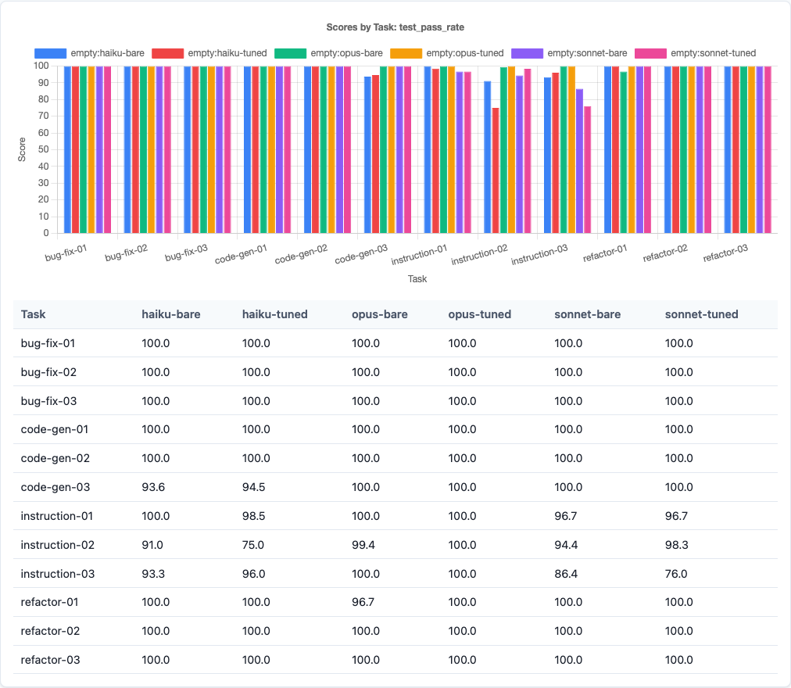
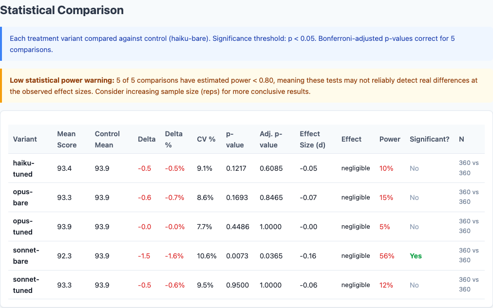
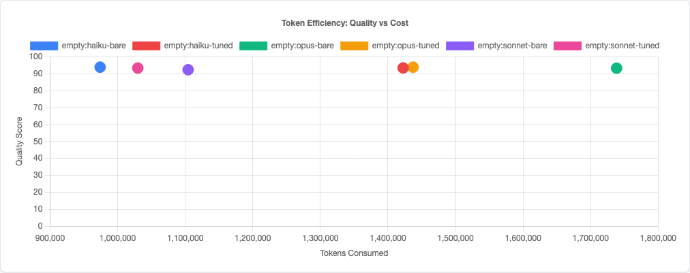

No Single Claude Model Wins Everything. 2,160 Runs Exposed the Tradeoffs.
The conventional wisdom is simple: use the biggest model you can afford. Opus for quality, Haiku for speed, Sonnet when you want something in between. The assumption is that model capability scales linearly—more parameters, better code. I assumed the same thing before I ran this experiment.
Then I ran 2,160 benchmarks and the data told a completely different story.
There is no best Claude model. There is a best model for each task type. Opus dominates instruction-following with near-zero variance. Sonnet produces the best bug fixes. And Haiku—the cheapest, fastest model—leads on refactoring. The overall scores land in a 1.5-point band so tight it's practically noise. But underneath that average, the task-level differences are dramatic.
Experiment Design
This is the fifth experiment in the claude-benchmark series. The first study tested CLAUDE.md instruction content (1,188 runs). The second tested chain-of-thought prompting (270 runs). The third tested prompt tone (810 runs). The fourth tested temperature settings. This one holds prompting strategy constant and isolates the variable developers argue about most: which model to use.
The Test Matrix
| Dimension | Values |
|---|---|
| Models | Claude Haiku 4.5, Claude Sonnet 4.6, Claude Opus 4.6 |
| Profile | empty (no CLAUDE.md) |
| Task Types | Bug fix, Code generation, Instruction following, Refactoring |
| Tasks | 12 (3 per task type) |
| Variants | bare, model-tuned |
| Repetitions | 30 per combination |
| Total runs | 2,160 |
The “bare” variant uses the raw task prompt. The “model-tuned” variant wraps it with model-specific framing—adjusting the prompt to play to each model’s documented strengths. Thirty repetitions per combination gives us reliable variance estimates. Zero runs failed across all 2,160 executions.
Overall Results: A Surprisingly Tight Race

Executive summary from the benchmark report: Haiku, Opus, and Sonnet land within 1.5 points of each other.
| Model | Bare Score | Tuned Score | Average |
|---|---|---|---|
| Haiku | 93.88 | 93.43 | 93.66 |
| Opus | 93.26 | 93.86 | 93.56 |
| Sonnet | 92.35 | 93.35 | 92.85 |
Haiku technically leads on bare prompts. Opus leads with tuning. But these differences are small enough to be noise at the aggregate level. The real story is underneath.
The Real Story: Task-Type Specialization

Variant x Task heatmap: each model has distinct strengths. The color bands tell the story before you read a single number.
The averages hide dramatic per-task-type differences. Each model has a clear strength area:
| Task Type | Best Model | Score | Worst Model | Score | Gap |
|---|---|---|---|---|---|
| Bug fixes | Sonnet (tuned) | 98.95 | Haiku | ~96 | ~3 pts |
| Code generation | Sonnet (tuned) | 97.42 | Haiku | ~95 | ~2.5 pts |
| Instruction following | Opus | 95.32 | Sonnet | 88.93 | ~6 pts |
| Refactoring | Haiku | 93.07 | Opus (bare) | 85.06 | ~8 pts |
Sonnet owns execution tasks. Bug fixes (98.95 tuned, stdev 1.12) and code generation (97.42 tuned) are Sonnet’s territory. When the task has a clear correct answer—pass the tests, generate working code—Sonnet delivers with the highest scores and lowest variance.
Opus owns compliance tasks. Instruction-following at 95.32 average, with a standard deviation of 0.05–1.52 across tasks. That near-zero variance is remarkable. When you need the model to follow specific constraints—output format, naming conventions, architectural rules—Opus does it every single time.
Haiku owns restructuring tasks. Refactoring at 93.07 is the biggest surprise. The cheapest model produces the best refactored code. Meanwhile, Opus (bare) scores only 85.06 on refactoring—the worst task-model combination in the entire experiment.

Per-model radar charts: Opus’s test pass rate dominates, Haiku’s LLM quality stands out, and all three share the same complexity weakness.
Per-Task Deep Dive: Variance Tells the Real Story
Averages can mislead. What matters in practice is: how often does this model produce a bad result?
The variance data reveals starkly different reliability profiles:
| Task | Model | Avg Score | Stdev | Interpretation |
|---|---|---|---|---|
| instruction-03 | Opus | ~95 | 0.05 | Essentially deterministic |
| instruction-03 | Haiku | ~90 | 20.79 | Wildly inconsistent |
| bug-fix-03 | Sonnet (tuned) | ~99 | 0.86 | Near-perfect reliability |
| bug-fix-02 | Haiku | 91.53 | 11.54 | Frequently botched |
| bug-fix-02 | Sonnet | 98.21 | 3.37 | Consistently strong |
Look at instruction-03: Opus’s stdev of 0.05 means every single run produced virtually the same output. Haiku’s stdev of 20.79 means some runs scored in the 70s while others scored perfectly. Same task, same prompt, same repetition count—completely different reliability. If you’re building an automation pipeline that routes to Claude, this is the data that should inform your model choice. It’s not about the average. It’s about the worst case.

Composite score bar chart: the tight clustering at the aggregate level masks the dramatic task-type differences underneath.
Sub-Score Analysis
The composite score blends four sub-metrics. Breaking those apart reveals where each model’s strengths actually come from:
| Sub-Score | Haiku | Sonnet | Opus |
|---|---|---|---|
| Test pass rate | 97.58% | 97.85% | 99.84% |
| Lint score | ~98% | ~98% | ~98% |
| Complexity | ~80 | ~77 | ~82 |
| LLM quality | 94.0 | ~92 | 91.4 |

Test pass rate breakdown: Opus’s near-perfect 99.84% is the clearest model differentiation in the sub-scores.
Haiku wins on perceived quality. Its LLM quality score of 94.0 (vs. Opus’s 91.4) means an LLM judge rates Haiku’s code as more readable and well-structured. Haiku tends to produce cleaner, more idiomatic code—it just occasionally produces code that doesn’t pass the tests.
All models struggle with complexity. Scores in the 77–82 range mean every model generates code with higher cyclomatic complexity than ideal. This is the one dimension where none of the models have cracked it. Generated code tends toward more branching, more nesting, more conditions than a human would write. Model selection doesn’t fix this.
Lint is a non-factor. All three models hit ~98%. Clean syntax is a solved problem for modern LLMs.

Full statistical comparison from the benchmark report: pairwise significance tests across all model-variant combinations.
Does Tuning Help?
Each task had a “bare” variant (raw prompt) and a “model-tuned” variant (prompt adjusted for the specific model’s strengths). The tuning deltas:
| Model | Bare Score | Tuned Score | Delta |
|---|---|---|---|
| Sonnet | 92.35 | 93.35 | +1.00 |
| Opus | 93.26 | 93.86 | +0.59 |
| Haiku | 93.88 | 93.43 | −0.45 |
This fits a pattern from the series: smaller models tend to be more sensitive to prompt framing, but not always in the direction you’d expect. Haiku’s best results come from leaving it alone. Sonnet benefits from tailored prompts. Opus is somewhere in between.
How This Fits the Bigger Picture
Five experiments, over 4,600 total runs. Here’s the updated variable effect hierarchy:
| Variable | Effect Size | Direction | Source |
|---|---|---|---|
| Task-aware model routing (best vs. worst per task) | ~6–8 points | Positive | This study (2,160 runs) |
| Model selection overall (best vs. worst) | ~1.5 points | Mixed | This study (2,160 runs) |
| Prompt tone (warm vs. bare) | ~1.3–1.5 points | Positive | Politeness study |
| CLAUDE.md instructions (best vs. worst) | ~1.4 points | Mixed | CLAUDE.md study |
| Model-specific prompt tuning | ~0.5–1.0 points | Mixed | This study (2,160 runs) |
| Chain-of-thought (bare vs. CoT) | ~0.5–1.1 points | Negative | CoT study |

Token efficiency scatter: Haiku delivers competitive quality at a fraction of the token cost. Sonnet occupies the middle ground.
Task-aware model routing is by far the largest effect I’ve measured. Picking the right model for the right task type yields a 6–8 point improvement over picking the wrong one—roughly 4–5× the impact of any prompt engineering technique. Blindly choosing a model overall barely matters (1.5 points), but choosing per-task matters enormously.
What This Means: Task-Aware Model Routing
The practical takeaway is a simple routing heuristic:
| Task Type | Route To | Why |
|---|---|---|
| Bug fixes | Sonnet (with tuning) | 98.95 avg, stdev 1.12. Highest accuracy, lowest variance. |
| Code generation | Sonnet (with tuning) | 97.42 avg. Clean, working code on the first try. |
| Instruction following | Opus | 95.32 avg, stdev near zero. When compliance matters, Opus is deterministic. |
| Refactoring | Haiku | 93.07 avg. Best restructuring quality at the lowest cost. |
This routing strategy would yield an effective composite score higher than any single model achieves alone. And it comes with a cost benefit: two of the four routes go to Sonnet or Haiku, which are significantly cheaper than Opus. You’d spend less money and get better results than using Opus for everything.
The caveat: this requires classifying your task before routing it. In practice, most development tasks map cleanly to these categories. “Fix this failing test” is a bug fix. “Add this endpoint” is code generation. “Follow these 12 formatting rules” is instruction following. “Clean up this module” is refactoring. The classification doesn’t need to be perfect—even rough routing beats no routing.
How This Compares to Public Benchmarks
Before you take my routing table at face value, it’s worth asking: does it match what everyone else is seeing? I dug into Anthropic’s official guidance, public coding benchmarks, and community consensus. The short answer: our results agree on some things and sharply diverge on others.
What Anthropic Says
Anthropic’s own model page describes the lineup as a clear capability tier:
| Model | Official Description | Pricing (per MTok) |
|---|---|---|
| Opus 4.6 | “The most intelligent model for building agents and coding” | $5 / $25 |
| Sonnet 4.6 | “The best combination of speed and intelligence” | $3 / $15 |
| Haiku 4.5 | “The fastest model with near-frontier intelligence” | $1 / $5 |
The implied hierarchy is Opus > Sonnet > Haiku. Pay more, get better code. Anthropic recommends Opus for “complex coding tasks, extended research, and agent workflows,” Sonnet for “daily development,” and Haiku for “real-time, low-latency” use cases. The messaging frames Haiku as the budget option you use when speed matters more than quality.
What Public Benchmarks Show
The major public coding benchmarks reinforce this hierarchy:
| Benchmark | Opus | Sonnet | Haiku | What It Tests |
|---|---|---|---|---|
| SWE-bench Verified | ~76.8% | ~75.6% | 73.3% | Resolving real GitHub issues in open-source Python repos |
| Terminal-Bench 2.0 | Industry-leading | — | 40–42% | Real-world agentic coding in terminal environments |
| Aider Polyglot (with thinking) | 72.0% | 61.3% | 28.0%* | 225 Exercism exercises across 6 languages |
*Aider tested Haiku 3.5, not Haiku 4.5. Haiku 4.5 would likely score significantly higher.
Every public benchmark tells the same story: Opus wins, Sonnet is close behind, Haiku trails at a distance. The gap is especially large on aider’s polyglot benchmark (72% vs 28%), though that comparison is unfair since it pits a current-gen Opus against a prior-gen Haiku.
Where Our Data Diverges
And here’s where 2,160 runs of focused coding tasks tell a different story:
| Claim | Public Consensus | Our Data |
|---|---|---|
| Overall ranking | Opus > Sonnet > Haiku | Haiku 93.88 ≈ Opus 93.26 ≈ Sonnet 92.35 |
| Best at bug fixes | Opus (most capable) | Sonnet (98.95 tuned) |
| Best at code gen | Opus (most capable) | Sonnet (97.42 tuned) |
| Best at instruction following | Opus (most capable) | Opus — confirmed, with near-zero variance |
| Best at refactoring | Opus (most capable) | Haiku (93.07 vs Opus 85.06) |
| Haiku’s role | Budget fallback for speed-sensitive work | Genuine quality leader on refactoring; ties overall |
Why the Discrepancy?
Three factors explain why our results diverge from the standard hierarchy:
1. Task complexity selects for different strengths. SWE-bench and Terminal-Bench test multi-step, multi-file problems that reward sustained reasoning across long contexts. Our tasks are single-turn, focused, and well-defined. On focused work, Opus’s extra reasoning power doesn’t just go unused—it can actively hurt. Anthropic themselves note in their prompting guide that Opus 4.6 “does significantly more upfront exploration” and has “a tendency to overengineer.” That tendency is exactly what tanks its refactoring score: when the task is “simplify this code,” a model that adds abstraction layers is doing the opposite.
2. Haiku 4.5 is dramatically underestimated. Most public benchmarks (including aider’s leaderboard) haven’t tested Haiku 4.5 yet. The Haiku scores people cite are from the much weaker Haiku 3.5. But Anthropic’s own announcement says Haiku 4.5 “matches Claude Sonnet 4’s capabilities at one-third the cost” and hit 73.3% on SWE-bench—within 3 points of Opus. In our data, Haiku isn’t just competitive; it wins outright on refactoring and ties the overall composite. The “budget model” framing doesn’t match reality anymore.
3. Variance matters more than averages. Public benchmarks report a single pass rate. They don’t typically report standard deviation, min/max, or per-run reliability. Our 30-rep-per-combination design reveals that Opus’s instruction-following dominance isn’t about being 6 points smarter on average—it’s about having a stdev of 0.05 versus Haiku’s 20.79. That reliability dimension is invisible in single-shot benchmarks but critical in production.
One Interesting Alignment
Our finding that Opus dominates instruction-following does align with one unexpected data point. Gamma, a presentation tool, reported that Haiku 4.5 “outperformed our current models on instruction-following for slide text generation, achieving 65% accuracy versus 44% from our premium tier model.” At first glance that contradicts our data. But Gamma’s “instruction following” means formatting slide text—a structured output task. Our instruction-following tasks test coding constraints: naming conventions, architectural rules, output format compliance. Different kinds of instructions surface different model strengths. Even within “instruction following,” the task specifics determine which model wins.
Limitations
- 12 tasks, same task set as prior experiments. These results are robust within this task set, but a broader range of tasks (especially harder ones) might shift the rankings. The patterns are consistent enough across tasks within each type that I’m reasonably confident, but more data would strengthen the case.
- Single-turn only. Real development involves multi-turn conversations where context accumulates. A model that’s worse on single-turn tasks might excel when it can ask clarifying questions or iterate. This measures first-shot quality only.
- Empty profile only. All runs used no CLAUDE.md. Model routing might interact with instruction content—Haiku with specific refactoring guidance could be even better, or the gap might shrink. That interaction is untested.
- Tuning variants are coarse. The “model-tuned” prompts are a single attempt at model-specific framing, not an exhaustive search. Better tuned prompts might change the delta significantly, especially for Haiku where the current tuning hurts.
- Cost and latency not measured. I tracked quality only. In practice, model selection also depends on cost per token and response time. A full cost-quality tradeoff analysis would make the routing recommendation more actionable.
Try It Yourself
The full experiment configuration and all 2,160 runs are in the claude-benchmark repository. Run the model selection experiment against your own tasks:
git clone https://github.com/jchilcher/claude-benchmark.git
cd claude-benchmark
pip install -e .
# Run the model selection experiment
claude-benchmark experiment run experiments/model-selection.yaml
# Generate the report
claude-benchmark experiment report results/experiment-model-selection-*/Or define your own task types and model combinations. The interesting question isn’t whether my routing heuristic is right for your codebase—it’s whether any single model is right for all your tasks. I’d bet it isn’t. The data is there to prove it.
Want to benchmark your own AI coding workflows?
I help teams measure and optimize their AI-assisted development processes—from prompt engineering to model routing strategies. Get a free assessment to find where data-driven decisions can improve your output quality.
Get Your Free Assessment